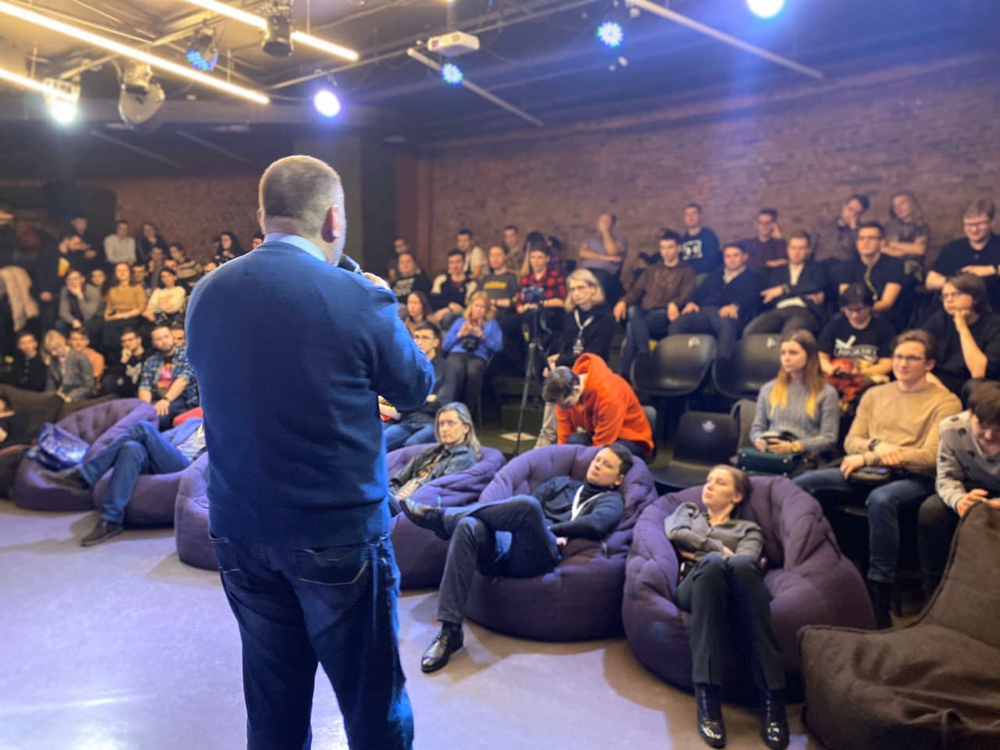

Лекции, дебаты и конференции
Наши идеи разделяют самые разные люди – юристы и блогеры, политики и экономисты, писатели и рок-звёзды. Мы зовем их выступать на наши мероприятия – и собираем полные залы сторонников свободы!
Граждане России достойны самостоятельно выбирать своё будущее. Каждый год мы боремся против тех, кто с этим не согласен — участники Чайного Клуба организовывают наблюдение на выборах, входят в избиркомы, участвуют в обучении коллег и консультациях кандидатов.
